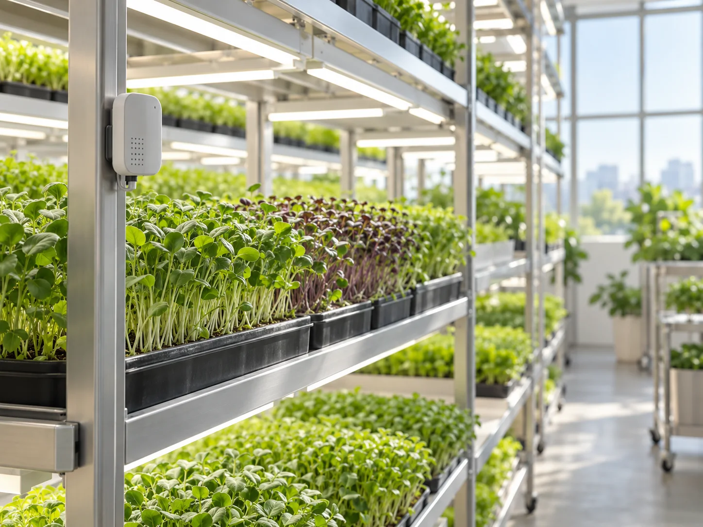

Ghi nhận điều kiện
Cảm biến thu thập thông tin tại vị trí đặt thiết bị. Muốn hiểu đúng, cần quan tâm cả thời điểm ghi nhận, vị trí đo và tình trạng hoạt động của cảm biến.
Khám phá cách ánh sáng, nguồn nước, dinh dưỡng và cảm biến phối hợp để hỗ trợ người chăm sóc hiểu cây hơn. Chọn từng chủ đề để xem góc nhìn tương ứng.
Điều khiển chu kỳ chiếu sáng LED theo từng giai đoạn sinh trưởng của cây.
Tuần hoàn và cung cấp nước đúng thời điểm, tối ưu lượng sử dụng.
Theo dõi nồng độ dinh dưỡng theo quy trình chuẩn hóa.
Cảm biến giúp theo dõi nhiệt độ và độ ẩm để điều chỉnh môi trường trồng.

Trong cách tiếp cận của Ươm Xanh, Smart Farm là sự phối hợp giữa không gian trồng, nguồn nước, ánh sáng và người chăm sóc. Thiết bị chỉ phát huy ý nghĩa khi giúp hiểu rõ hơn điều gì đang diễn ra quanh cây và hỗ trợ một quyết định phù hợp.
Nhà kính giúp tạo một không gian trồng có tổ chức. Hệ thống thủy canh đưa nước và dinh dưỡng đến vùng rễ; ánh sáng bổ sung có thể được bố trí theo nhu cầu. Các phần này cần được xem xét cùng nhau, bởi thay đổi ở một yếu tố thường ảnh hưởng đến những yếu tố còn lại.
Không có một thiết lập duy nhất dành cho mọi loại rau. Cây non, rau ăn lá và rau gia vị có đặc điểm khác nhau. Vì vậy, điều quan trọng là theo dõi sự phát triển qua từng giai đoạn và điều chỉnh có căn cứ, thay vì chạy theo một con số đẹp.
Cảm biến thu thập thông tin tại vị trí đặt thiết bị. Muốn hiểu đúng, cần quan tâm cả thời điểm ghi nhận, vị trí đo và tình trạng hoạt động của cảm biến.
Một chỉ số nên được đọc cùng hình thái lá, màu rễ và tốc độ sinh trưởng. Khi có dấu hiệu khác thường, bước tiếp theo là kiểm tra nguyên nhân và độ tin cậy của phép đo.
Thay đổi lịch chiếu sáng, tưới hoặc dinh dưỡng cần phù hợp với nhóm cây. Sau điều chỉnh, tiếp tục quan sát phản ứng của cây và ghi lại để đối chiếu ở lần chăm sóc sau.
Tự động hóa có thể hỗ trợ những công việc lặp lại, nhưng sự cẩn thận vẫn nằm ở con người. Kiểm tra đường ống, vệ sinh khu vực trồng, quan sát cây và phát hiện thiết bị hoạt động bất thường là những việc không thể chỉ nhìn qua một màn hình.
Ở một hệ thống tuần hoàn, việc đưa nước trở lại sử dụng cần đi cùng theo dõi chất lượng và vệ sinh hệ thống. Tương tự, bổ sung đèn cần cân nhắc nhu cầu cây, thời gian chiếu và năng lượng sử dụng. “Thông minh” nằm ở cách cân bằng các yếu tố, không ở số lượng thiết bị.
Với Ươm Xanh, công nghệ nên làm quy trình rõ ràng hơn: biết mình đã thay đổi điều gì, vì sao thay đổi và cần quan sát gì tiếp theo. Đó cũng là cách kết nối câu chuyện nông trại với chất lượng mà người dùng quan tâm.
Cây vẫn cần ánh sáng, dinh dưỡng và điều kiện phù hợp ở vùng rễ. Thủy canh thay đổi cách đưa nước và dinh dưỡng đến cây; chất lượng chăm sóc vẫn phụ thuộc vào cả quy trình.
Nhà kính giúp chủ động hơn với môi trường trồng, nhưng nhiệt độ bên ngoài, ánh nắng và độ ẩm vẫn có ảnh hưởng. Theo dõi và điều chỉnh vẫn là công việc cần thiết.
Giá trị mà Ươm Xanh hướng đến là một quá trình chăm sóc có tổ chức và dễ giải thích: từ lựa chọn điều kiện trồng đến quan sát cây và thời điểm thu hoạch. Bạn có thể tìm hiểu tiếp từng bước ở trang Hành trình xanh.